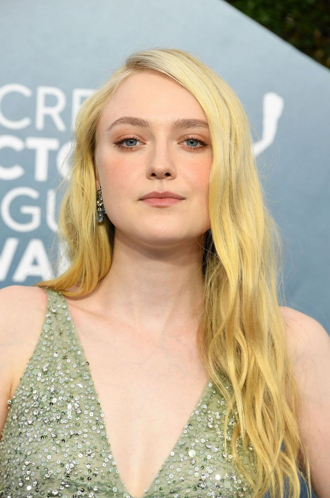
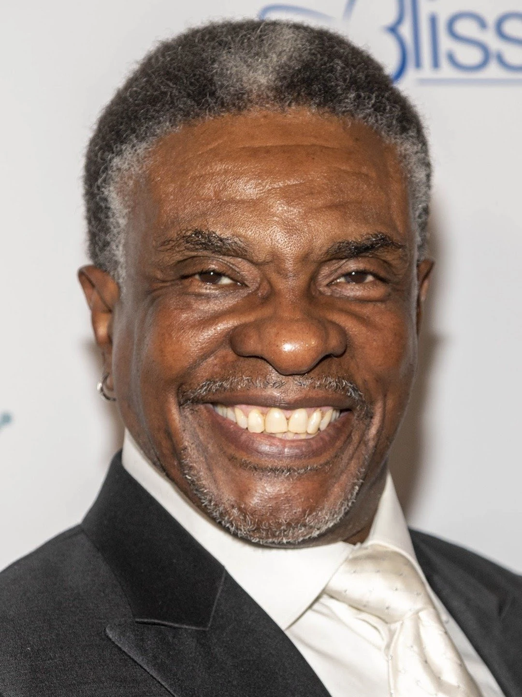

Cast
Dakota Fanning - Coraline Jones
Hannah Dakota Fanning is an American actress who started her career as a child on the NBC drama ER. She's known for her roles in blockbuster films and independent features, and has been nominated for a Golden Globe, a Primetime Emmy, and two Screen Actors Guild Awards.
Teri Hatcher - Mel Jones / The Other Mother

Teri Lynn Hatcher is an Emmy-nominated, Golden Globe-winning American actress, author, and singer. Hatcher first gained widespread recognition for her portrayal of Lois Lane in the ABC series Lois & Clark: The New Adventures of Superman.
John Hodgman - Charlie Jones
John Kellogg Hodgman is an American author, actor, and humorist.
Robert Bailey Jr. - Wyborne 'Wybie' Lovat

Robert Bailey Jr. is an American actor. Beginning his career as a child, Bailey appeared in films Mission to Mars and Dragonfly, and acted in various television series during the late 1990s and 2000s.
Keith David - The Cat
Keith David is a classically trained, Emmy Award-winning actor and Tony Award nominee. He's known for his deep voice and over 300 roles in film, television, stage, and interactive media.